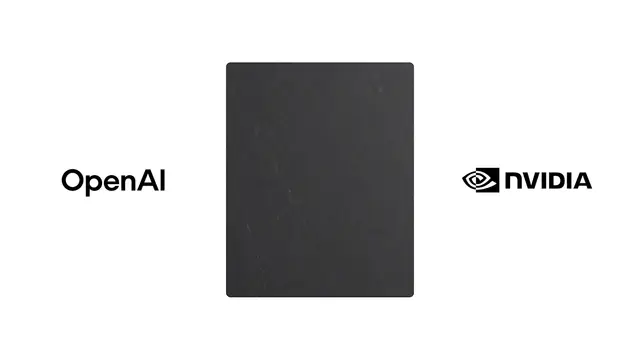

OpenAI / 仕事での活用・モデル更新
NVIDIA、ChatGPT Workで専門業務を自動化 GTC準備を週16時間削減

NVIDIAが、ChatGPT Workを営業支援やAI情報分析などの実務に組み込み、専門知識を再利用可能なワークフローとして組織全体へ展開しています。OpenAIが2026年8月18日に公開した事例では、単なるチャット利用ではなく、情報収集、分析、判断支援、プロトタイプ開発までを一連の業務として自動化している点が特徴です。
QUICK READ
この記事の要点
GTC準備で週16時間を削減
NVIDIAのGo-To-Market部門では、AIカンファレンス「GTC」の準備にChatGPT Workを活用しています。 従来はスプレッドシートを使い、アカウント一覧の作成、参加登録状況の追跡、営業担当者が取るべきアクションの整理などを手作業で行っていました。担当者は、この分析作業だけで準備期間中の約40％を費やしていたとしています。 現在はワークフローを自動化し、週2回実行する仕組みに変更しました。12週間のGTC計画サイクルでは、週あたり約16時間を削減できたとされています。 さらに重要なのは、作成した処理を別地域へ再利用できる点です。サンノゼ、台北、欧州、ワシントンDCなどのイベント担当チームにも共有され、それぞれの業務に合わせてカスタマイズされています。
40件のAI情報を5〜8件の「行動可能なシグナル」へ
マーケティング組織のAIオペレーションでは、急増するAI関連情報の選別にもChatGPT Workが使われています。 ワークフローは、信頼できる外部情報とNVIDIA内部のプロジェクトや会話、優先事項を照合し、業務上重要な関連性を抽出します。毎週約25〜40件のAI関連アップデートを分析し、5〜8件の実行可能なシグナルへ絞り込んでいます。 技術的なポイントは、単なるニュース要約ではなく、外部情報を内部コンテキストと結び付けていることです。これにより「何が起きたか」だけでなく、「自社にとって何が重要か」という判断支援までAIワークフローに組み込めます。
プロトタイプ開発も2〜3週間から3〜5日に
ChatGPT Workは開発工程にも利用されています。アイデア検討からコードベースの確認、デバッグ、改良までを同じ環境で進めることで、複数ツールを行き来する負担を削減しています。 ある事例では、従来なら手作業で2〜3週間かかると見積もられたプロトタイプを、約3〜5日で動作する状態まで構築しました。 これは生成AIの価値が「文章生成」から「業務プロセスそのものの実装」へ移りつつあることを示しています。
Discord掲載記事からの抜粋です。詳細・文脈は全文と出典をご確認ください。
出典・参考リンク
日付はAFNJPへの掲載日です。発表元の公開日とは異なる場合があります。